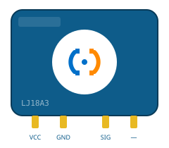

Sensor Capacitivo LJ18A3

O LJ18A3 é um sensor de proximidade capacitivo, capaz de detectar tanto objetos metálicos quanto não metálicos — como plásticos, líquidos e grãos — sem contato direto.
Conceito
O LJ18A3 é um sensor de proximidade capacitivo, capaz de detectar tanto objetos metálicos quanto não metálicos — como plásticos, líquidos e grãos — sem contato direto.
Princípio de funcionamento
Forma um campo elétrico capacitivo na face sensora; a aproximação de qualquer material com constante dielétrica diferente do ar (metal, líquido, madeira, plástico) altera a capacitância do circuito oscilador interno, o que é detectado pelo sensor e traduzido em uma comutação na saída digital.
Especificações técnicas
Saída digital em corrente contínua, semelhante ao sensor indutivo, também exigindo interface para uso com Arduino.
Tensão de alimentação: 6 – 36V DC
Distância de detecção: ~8mm (modelo LJ18A3-8-Z)
Saída: NPN ou PNP
Encapsulamento cilíndrico rosqueável M18
Sensibilidade ajustável por trimpot em alguns modelos
Aplicações industriais e IoT
Controle de nível em silos de grãos e reservatórios de líquidos
Detecção de embalagens plásticas
Contagem de objetos não metálicos
Detecção de nível através da parede de tanques (sem contato com o produto)
Exemplo de utilização em um projeto
Instalado na parede externa de um reservatório de água, o sensor capacitivo detecta a presença de líquido sem entrar em contato com ele; ao identificar nível baixo, o Arduino aciona um relé que liga a bomba de reposição automaticamente.
Fabricantes e modelos comerciais
- Amplamente usado em automação de baixo custo
- Padrão industrial de referência para aplicações capacitivas